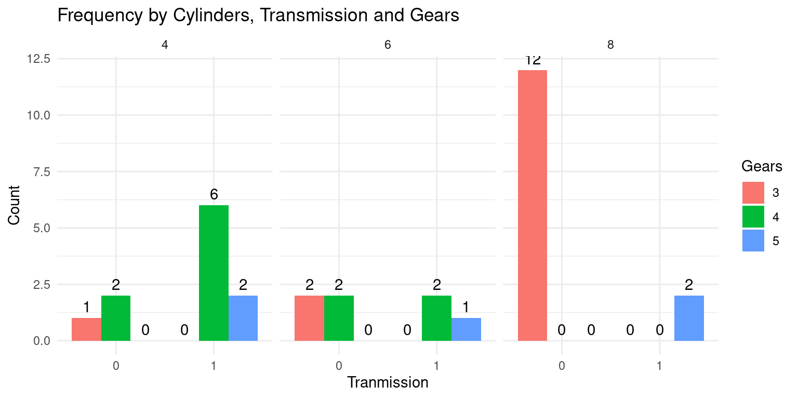
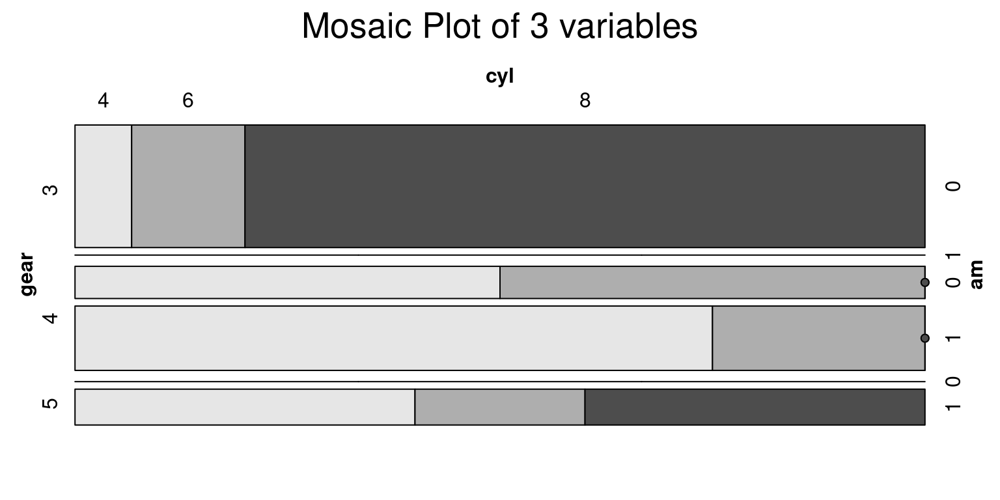

# Load the required libraries, suppressing annoying startup messages
library(tibble)
suppressPackageStartupMessages(library(dplyr))
# Read the mtcars dataset into a tibble called tb
data(mtcars)
tb <- as_tibble(mtcars)
# Convert relevant columns into factor variables
tb$cyl <- as.factor(tb$cyl) # cyl = {4,6,8}, number of cylinders
tb$am <- as.factor(tb$am) # am = {0,1}, 0:automatic, 1: manual transmission
tb$vs <- as.factor(tb$vs) # vs = {0,1}, v-shaped engine, 0:no, 1:yes
tb$gear <- as.factor(tb$gear) # gear = {3,4,5}, number of gears
# Directly access the data columns of tb, without tb$mpg
attach(tb)Categorical x Categorical data (2 of 2)
Aug 7, 2023
Exploring Multivariate Categorical Data
THIS CHAPTER explores how to summarize and visualize multivariate, categorical data.
Multivariate categorical variables allow us to analyze and comprehend relationships between three or more categorical variables respectively.
This form of analysis can help reveal complex interactions and dependencies between multiple variables that cannot be detected in bivariate analyses. For example, we might want to explore the relationship between a person’s gender, car ownership status, and their level of education (high school, bachelor’s, master’s, etc.). Both bivariate and multivariate analyses are essential in statistical and data analysis as they allow us to uncover relationships and patterns in data
Data: Suppose we run the following code to prepare the
mtcarsdata for subsequent analysis and save it in a tibble calledtb.
Three Way Relationships
A Three-Dimensional Contingency Table, often referred to as a 3-way contingency table, is a statistical tool that helps analyze the relationship between three categorical variables. It builds upon the concept of a standard two-dimensional contingency table, which shows the distribution of two categorical variables, by adding a third dimension to the analysis.
Imagine a grid-like structure with three axes representing the three variables. The rows correspond to the categories of the first variable, the columns represent the categories of the second variable, and the layers (sheets) represent the categories of the third variable. Each cell within the table contains the frequency or count of observations that belong to a specific combination of the three variables.
When dealing with a three-way relationship, our focus is on three categorical variables and how they interact with each other. Such interactions can be manifest in the form of changes in the relationship between two variables based on the values of the third variable. Alternatively, we might seek to comprehend how all three variables collectively influence the observed data.
Graphically, three-way relationships can be represented in various forms, such as three-dimensional contingency tables, side-by-side mosaic plots, or even three-dimensional bar plots. However, it’s crucial to note that these visual representations can become complicated and challenging to decipher as the number of categories within each variable rises (Agresti, 2002).
Three-Dimensional Contingency Tables
The R language, versatile as it is, provides multiple functions for creating contingency tables for multivariate categorical data. In this case, we’re focusing on the
table(),xtabs(), andftable()functions for forming a three-way contingency table (R Core Team, 2020). Here is some code:We can create a three-way contingency table of
cyl,gear, andamusing thetable()function.
table(cyl,
gear,
am), , am = 0
gear
cyl 3 4 5
4 1 2 0
6 2 2 0
8 12 0 0
, , am = 1
gear
cyl 3 4 5
4 0 6 2
6 0 2 1
8 0 0 2When we run this code, the output is a three-dimensional contingency table showing the frequencies of all combinations of the three variables. Each cell in the resulting table represents the number of observations for a particular combination of cyl, gear, and am categories.
Notice that we are segmenting the tables based on the 3rd argument given the table function, which is the transmission
am.
- We could alternately run the following code and instead segment the tables based on the cylinders
cyl.
table(am,
gear,
cyl), , cyl = 4
gear
am 3 4 5
0 1 2 0
1 0 6 2
, , cyl = 6
gear
am 3 4 5
0 2 2 0
1 0 2 1
, , cyl = 8
gear
am 3 4 5
0 12 0 0
1 0 0 2xtabs(): We can also create a three-way contingency table ofcyl,gear, andamusing thextabs()function
xtabs(~ cyl + gear + am
, data = tb), , am = 0
gear
cyl 3 4 5
4 1 2 0
6 2 2 0
8 12 0 0
, , am = 1
gear
cyl 3 4 5
4 0 6 2
6 0 2 1
8 0 0 2- Here, the formula
~ cyl + gear + amdefines the three variables we are interested in.
ftable(): Theftable()function is employed to generate a ‘flat’ contingency table, which is essentially a higher-dimensional contingency table displayed in a two-dimensional format (R Core Team, 2020). We can also create a three-way contingency table ofgear,cyl, andamusing the following code:
ftable(gear + cyl ~ am,
data = tb) gear 3 4 5
cyl 4 6 8 4 6 8 4 6 8
am
0 1 2 12 2 2 0 0 0 0
1 0 0 0 6 2 0 2 1 2In this code,
ftable(gear + cyl \~ am, data = tb), we are asking R to arrange the gear and cyl variables in the rows and the am variable in the columns.The
~operator separates the variables that will be displayed in rows (on the left) and columns (on the right) in the resulting table.The
+operator denotes that bothgearandcylwill be included in the row labels.
ftable(gear ~ cyl + am,
data = tb) gear 3 4 5
cyl am
4 0 1 2 0
1 0 6 2
6 0 2 2 0
1 0 2 1
8 0 12 0 0
1 0 0 2This variation of code,
ftable(gear ~ cyl + am, data = tb), it is structured slightly differently. Here, thegearvariable forms the row and bothcylandamvariables form the columns of the flat contingency table.In both scenarios, an ftable provides a more compact view of the three-way relationship among the
gear,cyl, andamvariables. However, the orientation of the variables in the rows and columns changes, providing different views of the data and potentially making certain patterns more evident depending on the question we’re trying to answer.The exact choice between
ftable(gear + cyl ~ am, data = tb)andftable(gear ~ cyl + am, data = tb)will depend on what specific relationships you’re most interested in exploring in your data.
Visualization using a Faceted Bar Plot in ggplot
A Three-Dimensional Bar Plot is a generalization of a conventional two-dimensional bar graph, expanded into a third dimension. Rather than using bars at specific x coordinates in a two-dimensional plane, we utilize a grid of bars on the x-y plane, extending upwards in the z direction to indicate the data’s magnitude. [6]
Here is some sample code:
# Load necessary package
library(ggplot2)
Attaching package: 'ggplot2'The following object is masked from 'tb':
mpg# Create a table with count of each combination
count_df <- table(tb$cyl, tb$am, tb$gear)
# Convert table to a data frame for plotting
count_df <- as.data.frame.table(count_df)
# Rename columns
names(count_df) <- c("cyl", "am", "gear", "count")
# Create the plot
ggplot(count_df, aes(x=cyl, y=count, fill=gear)) +
geom_bar(stat="identity",
position="dodge") +
facet_grid(~am) +
labs(
title = "Frequency by Transmission (1 = Manual, 0 = Automatic), Cylinders and Gears", # Add your plot title here
x = "Cylinders",
y = "Count",
fill = "Gears"
) +
# Add count labels to the bars
geom_text(aes(label = count),
position = position_dodge(width = 0.9),
vjust = -0.5) +
theme_minimal()This code creates a faceted bar plot to visually represent the frequency of combinations of three categorical variables:
cyl(Cylinders),am(Transmission), andgear(Gears).The line
count_df <- table(tb$cyl, tb$am, tb$gear)generates a contingency table of the frequencies at each level of the three categorical variables (cyl,am,gear), using thetable()function.Next,
count_df <- as.data.frame.table(count_df)is used to convert the generated contingency table into a data frame, which can be more conveniently manipulated and visualized usingggplot2(Wickham, 2016).The names of the data frame’s columns are then reassigned using
names(count_df) <- c("cyl", "am", "gear", "count"). The ‘count’ column represents the frequency of each combination of the levels of thecyl,am, andgearvariables.The plot is created using the
ggplot()function, which initializes a ggplot object. The aesthetic mappingaes(x=cyl, y=count, fill=gear)specifies that the x-axis representscyl, the y-axis representscount, and the color fill of the bars is based ongear.The
geom_bar(stat="identity", position="dodge")function call adds a layer to the plot that depicts the data as a bar chart. The argumentstat="identity"informs ggplot that the heights of the bars are given in the data (i.e., in thecountvariable), andposition="dodge"causes bars associated with different levels ofgearto be drawn side-by-side.The
facet_grid(~am)function call adds facets to the plot based on theamvariable, creating a separate subplot for each level ofam.The
labs()function call specifies the labels for the plot, including the title and the x-, y-, and fill-axis labels. Thetheme_minimal()call is used to apply a minimalist aesthetic theme to the plot.The
aes(label = count)insidegeom_text()tells ggplot to use thecountcolumn in the data frame as the labels for each bar. Theposition_dodge(width = 0.9)argument ensures that the labels are properly aligned with the corresponding bars in the grouped plot, andvjust = -0.5adjusts the vertical position of the labels to make them appear just above the bars.This code thus provides a clear and insightful visualization of the frequency of each combination of
cyl,am, andgear. [7]
- Here is some alternate sample code:
# Load necessary package
library(ggplot2)
# Create a table with count of each combination
count_df <- table(tb$cyl, tb$am, tb$gear)
# Convert table to a data frame for plotting
count_df <- as.data.frame.table(count_df)
# Rename columns
names(count_df) <- c("cyl", "am", "gear", "count")
# Create the plot
ggplot(count_df, aes(x=am, y=count, fill=gear)) +
geom_bar(stat="identity", position="dodge") +
facet_grid(~cyl) +
labs(
title = "Frequency by Cylinders (4,6,8), Transmission (1=Manual, 0=Automatic) and Gears", # Add your plot title here
x = "Tranmission",
y = "Count",
fill = "Gears"
) +
# Add count labels to the bars
geom_text(aes(label = count),
position = position_dodge(width = 0.9),
vjust = -0.5) +
theme_minimal()
This code is very similar to the previous one; both create a faceted bar plot to display the frequencies of the levels of three categorical variables from the tb dataset. The main difference between the two lies in the aesthetic mappings and the facet specification in the ggplot() function call.
In this new code, the x-axis mapping in aes() is changed from cyl (Cylinders) to am (Transmission). Hence, the x-axis of the bar plot will now depict the Transmission type instead of Cylinders.
Similarly, the facet_grid() function, which was previously applied to am, is now applied to cyl. This means that the plot will now be faceted by the Cylinders variable. Each facet (or subplot) will correspond to a different number of Cylinders (4, 6, or 8). [7]
Visualization using a Mosaic Plot
# Load necessary packages
library(vcd)Loading required package: grid# Create a mosaic plot
vcd::mosaic(~gear+cyl+am,
data = tb,
main = "Mosaic of Gears, Cylinders and Transmission type",
shade = TRUE,
highlighting = "cyl" )
- The provided R code generates a mosaic plot using the
vcdpackage, specifically focusing on thegear,cyl, andamvariables from thetbdataset. A mosaic plot is a visual representation of the frequencies or proportions of combinations of categorical variables.
vcd::mosaic(~gear+cyl+am, data = tb, main = "Mosaic of Gears, Cylinders and Transmission type", shade = TRUE, highlighting = "cyl" )generates the mosaic plot. The~gear+cyl+amformula indicates that the mosaic plot should visualize thegear,cyl, andamvariables.data = tbspecifies the dataset to be used, which istbin this case.main = "Mosaic of Gears, Cylinders and Transmission type"sets the main title of the plot.shade = TRUEmeans that shading is applied to the cells in the plot. The shading can help to differentiate the cells visually based on the residuals from a model of independence (Meyer, Zeileis, & Hornik, 2006).highlighting = "cyl"means that thecylvariable’s levels will be distinctly colored. This highlighting helps to visually emphasize the differences amongcylcategories in the plot.
- The generated mosaic plot provides an effective visual exploration of the joint distribution of
gear,cyl, andamvariables in thetbdataset, highlighting thecylvariable.
Four-Way Relationships
Studying a four-way relationship between four categorical variables, involves looking at their interactions to see how they work together
Four-Dimensional Contingency Tables
- Recall that am, cyl, gear, and vs are all variables in the mtcars dataset.
- am indicates the type of transmission (0 = automatic, 1 = manual).
- cyl represents the number of cylinders in the car’s engine.
- gear is the number of forward gears in the car.
- vs indicates the engine shape (0 = V-shaped, 1 = straight).
- Suppose we wish to create a 4-way Contingency Table. Recall that the ftable() function provides an easy way to summarize categorical data in a “flat” table, which can make the data easier to understand and interpret. [8]
- Consider this code:
ftable(am + cyl ~ gear + vs,
data = tb) am 0 1
cyl 4 6 8 4 6 8
gear vs
3 0 0 0 12 0 0 0
1 1 2 0 0 0 0
4 0 0 0 0 0 2 0
1 2 2 0 6 0 0
5 0 0 0 0 1 1 2
1 0 0 0 1 0 0- Here is how the code works:
- In the formula am + cyl ~ gear + vs, the tilde (~) separates the rows and columns of the table.
- The variables to the left of the tilde (am and cyl) form the rows, and the variables to the right of the tilde (gear and vs) form the columns.
- The plus sign (+) between variables indicates that we want to consider all combinations of these variables.
- The resulting table shows the counts of each combination of am and cyl for each combination of gear and vs.
- We can personalize the 4-way contingency table in several ways. [8]
- Consider this alternate code:
ftable(am + cyl + vs ~ gear,
data = tb) am 0 1
cyl 4 6 8 4 6 8
vs 0 1 0 1 0 1 0 1 0 1 0 1
gear
3 0 1 0 2 12 0 0 0 0 0 0 0
4 0 2 0 2 0 0 0 6 2 0 0 0
5 0 0 0 0 0 0 1 1 1 0 2 0- Here is how the code works:
This code
ftable(am + cyl + vs ~ gear, data = tb)also uses theftablefunction in R to generate a contingency table. However, there is a significant difference in the configuration of variables compared to the previous code.In the previous code,
am + cyl ~ gear + vs, the row variables (amandcyl) were cross-tabulated against the combinations of column variables (gearandvs).In this new code, we have
am + cyl + vs ~ gear, which means that we now have three row variables (am,cyl, andvs) and one column variable (gear). This will result in a table showing the counts of each combination ofam,cyl, andvsfor each level ofgear.In short, the new code has added
vsas a third row variable and removed it from the column variables, thus changing the structure and the interpretation of the resulting table.
Visualization using a Mosaic Plot
- We can visualize four dimensional Contingency Tables using a Mosaic Plot. This is an extension to our previous discussions about two-way and three-way contingency tables. Consider the following code:
# Create a mosaic plot of cyl vs, gear, am
vcd::mosaic(~ cyl + vs + gear + am,
data = tb,
main = "Mosaic Plot of 4 variables",
shade = TRUE,
highlighting = "cyl" )- Here is how the code works:
~ cyl + vs + gear + am is a formula that indicates the categorical variables to be plotted. Each variable will be represented as a dimension in the plot, and their combined proportions will make up the whole plot.
The data = tb argument informs the function that the variables are found in the mtcars dataset.
The main = “Mosaic Plot of 4 variables” line sets the main title of the plot.
shade = TRUE means that the cells in the mosaic plot will be shaded. The shading adds an extra visual element, which can make it easier to compare proportions.
Finally, highlighting = “cyl” means that the cells in the plot will be highlighted based on the levels of the cyl variable. This can help to visually differentiate the categories of this variable.
Summary of Chapter 10 – Categorical Data (3 of 3)
In the third installment of our “Categorical Data” series, we explore the world of multivariate categorical variables. Specifically, we focus on three-dimensional analyses that unveil complex relationships and dependencies between numerous variables.
We utilize the R programming language, demonstrating a range of functions for constructing three-dimensional contingency tables. We also delve into segmenting these tables based on various variables, offering unique perspectives on the data.
Further, we expand on visualizing this data, discussing the creation of three-dimensional bar plots and mosaic plots. These powerful visual tools assist in data interpretation by representing the frequency of combinations of multiple variables.
We don’t limit ourselves to three-dimensional analysis; we advance into examining four-way relationships between categorical variables. Here, we utilize four-dimensional contingency tables and mosaic plots for analysis and visualization.
In essence, this chapter provides a robust understanding of multivariate categorical data handling and visualization, preparing readers to navigate and analyze complex datasets effectively.
Overall, these three chapters together provide a comprehensive understanding of handling and visualizing multivariate categorical data.
References
[1] Agresti, A. (2018). An Introduction to Categorical Data Analysis (3rd ed.). Wiley.
Kabacoff, R. I. (2015). R in Action: Data analysis and graphics with R (2nd ed.). Manning Publications.
Wickham, H., & Grolemund, G. (2016). R for Data Science: Import, Tidy, Transform, Visualize, and Model Data. O’Reilly Media.
Hair, J. F., Black, W. C., Babin, B. J., & Anderson, R. E. (2018). Multivariate data analysis (8th ed.). Cengage Learning.
[2] Unwin, A. (2015). Graphical data analysis with R. CRC Press.
Friendly, M. (2000). Visualizing Categorical Data. SAS Institute.
Hartigan, J. A., & Kleiner, B. (1981). Mosaics for contingency tables. In Computer Science and Statistics: Proceedings of the 13th Symposium on the Interface (pp. 268-273).
[3] Healy, K., & Lenard, M. T. (2014). A practical guide to creating better looking plots in R. University of Oregon. https://escholarship.org/uc/item/07m6r
[4] Meyer, D., Zeileis, A., & Hornik, K. (2020). vcd: Visualizing Categorical Data. R package version 1.4-8. https://CRAN.R-project.org/package=vcd
Friendly, M. (1994). Mosaic displays for multi-way contingency tables. Journal of the American Statistical Association, 89(425), 190-200.
Agresti, A. (2018). An Introduction to Categorical Data Analysis (3rd ed.). Wiley.
[5] R Core Team (2020). R: A language and environment for statistical computing. R Foundation for Statistical Computing, Vienna, Austria. URL https://www.R-project.org/.
[6]
Unwin, A., Theus, M., & Hofmann, H. (2006). Graphics of large datasets: visualizing a million. Springer Science & Business Media.
[7]
Wickham, H. (2016). ggplot2: Elegant Graphics for Data Analysis. Springer-Verlag.
Meyer, D., Zeileis, A., & Hornik, K. (2006). The strucplot framework: Visualizing multi-way contingency tables with vcd. Journal of Statistical Software, 17(3), 1-48.
[8]
R Core Team. (2020). ftable: Flat Contingency Tables. In R Documentation. Retrieved from https://www.rdocumentation.org/packages/base/versions/3.6.2/topics/ftable
R Core Team. (2020). mtcars: Motor Trend Car Road Tests. In R Documentation. Retrieved from https://www.rdocumentation.org/packages/datasets/versions/3.6.2/topics/mtcars